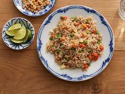

Fried Rice

Description
Fried rice is a delectable dish that began as a way to use leftover
rice, meat, and vegetables. The only two essentials are egg and rice,
but most modern versions include green onions and a second protein
source. This version is a very basic version, but feel free to add whatever
you need to use up from your fridge.
Ingredients
- Rice, day-old
- Egg
- Green Onions, finely chopped
- Sesame Oil
Steps
- Preheat a wide pan or wok over high heat
- Add sesame oil and let toast until it just starts smoking
- Add rice, and break it up enough to spread it around the cooking
surface. Toast for 3-5 minutes, stirring constantly
- Turn off the heat. Push the rice to the side of the pan, then crack
the egg into the clear part of the pan. Break the yolk, then
scramble it. Chop the egg into small pieces.
- Add the green onion, and mix the pan's contents thoroughly.
Index